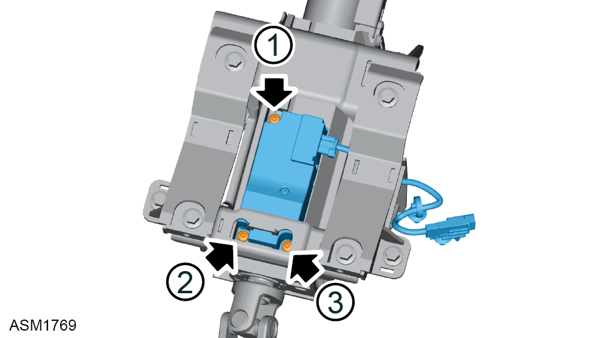
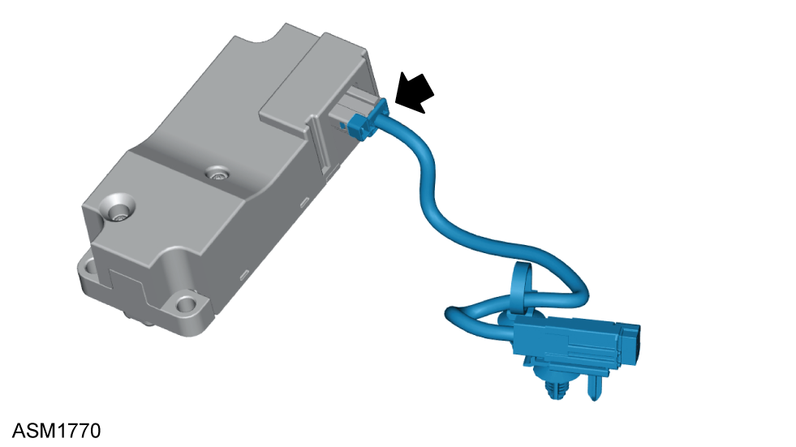

Module - Electronic Steering Lock
Print
Operation Code: 32.05.23-02
Removal
- Remove upper steering column assembly. Refer to procedure.

- Remove M5x16 Torx screws (x3) securing electronic steering lock module to upper steering column. Torque 5 Nm.
Note: Tighten bolts in numerical order.
- Remove electronic steering lock module.

- Release harness connector from electronic steering lock module.
- Remove harness adapter.
Installation
- Installation is the reverse of removal procedure except for the following:
- After installation perform a diagnostic read and clear error memory using Lotus Insight tool.